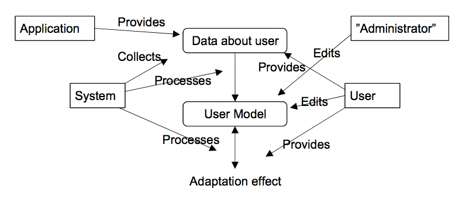

Luentoviikko 4.6. Mukautuvat järjestelmät
Jukka Huhtamäki
Luentoviikko 4.6. Mukautuvuus ja käyttäjän mallintaminen
Verkkopalvelun mukauttamista voi tarkastella useasta eri näkökulmasta:
-
Laiteriippumattomuus: mahdollisuus verkkopalvelun
käyttämiseen työasemalla, kämmentietokoneella, matkapuhelimella,
puhekäyttöliittymällä, digi-tv:llä tai ruudunlukijalla
-
Saavutettavuus: laiteriippumattomuus, erityisryhmät,
käyttötilanteet
-
Kansainvälistäminen ja kotoistaminen: kielestä,
kulttuurista ja maantieteellisestä sijainnista riippumattomat
verkkopalvelut
-
Personointi: verkkopalvelun sisällön, toimintojen ja
ulkoasun mukauttaminen käyttäjän mieltymysten mukaiseksi
-
Suosittelijajärjestelmät: tietosisältöjen valinnan tukeminen käyttäjän
toiminnan ja profiilitietojen perusteella (kiinnostuksen kohteet).
Taustaa: mukautuva hypermedia
Taustalla mukautuvan hypermedian (adaptive
hypermedia) periaatteet:
-
Käyttäjästä
luodaan malli (user model)
-
Sovelluksesta ja sen sisällöstä luodaan malli (domain model)
-
Sovelluksesta
käyttäjälle välitettävät näkymät mukautetaan käyttäjän ja
sovelluksen mallin yhdistelmän, ns. overlay-mallin perusteella
Mukautuvan järjestelmän toteuttaminen
Räätälöity tai joustava julkaiseminen:
-
Sisältöalkioille määritellään joukko piirteitä (feature) joiden perusteella niitä voidaan hallita ja esimerkiksi luokitella
-
Käyttäjän kiinnostusta sisältöalkioihin mitataan arvostelujen (rating) tai toiminnan (esim. kuuntelukerrat) perusteella
-
Käyttäjäprofiilien ja piirteiden perusteella tietosisällöstä valitaan oikeat sisältöalkiot,
jotka esitetään käyttökontekstiin soveltuvassa muodossa
Mukautuvan järjestelmän toteuttaminen onnistuu mainiosti perinteisen Web-sovelluskehyksen tuella.
Käytössä on lisäksi [Surprisen](http://surpriselib.com/) kaltaisia kirjastoja.
Mukautuva hypermedia Brusilovskyn mukaan
Mukautuvan
hypermedian keskeinen tutkija Peter Brusilovsky on määritellyt
mukautuvan hypermedian seuraavasti (Methods and techniques of
adaptive hypermedia PDF-muodossa):
-
Mukauttaminen perustuu käyttäjämalliin
-
Sovelluksen
esitystapa ja linkitys voidaan mukauttaa käyttäjämallin
perusteella
-
Käyttäjämalli: käyttäjän tietämys, osaaminen,
tavoitteet, tausta, kokemukset ja mieltymykset
-
Esitystapa: ulkoasu ja sisältö
-
Linkitys: linkkien järjestäminen, piilottaminen,
poistaminen, kommentointi (annotointi) ja tuottaminen, käyttäjän
suora ohjaaminen, sisällysluettelon mukauttaminen
Käyttäjämalliin
voidaan lisätä vielä esimerkiksi kielitaito, äidinkieli ja
kansallisuus
Brusilovskyn
mukautuva hypermedia keskittyy suurelta osin sovelluksen
navigaation muokkaamiseen, mutta myös sisällön mukauttamisessa on
lukuisia mahdollisuuksia
Käyttäjän
mallintaminen (Brusilovsky)
Käyttäjän
mallintaminen mukautuvassa hypermediasovellyksessa Brusilovskyn
mukaan:

Lähde: Brusilovsky, P. Methods and techniques of adaptive
hypermedia
Esimerkki:
amazon.com ja käyttäjän tiedot
Amazon.comia
käytetään usein esimerkkinä mukautuvasta järjestelmästä (vrt. Verkkokauppa).
Amazonin tavoitteena on kasvattaa myyntiä, mutta ideoita voi
hyödyntää monessa muussakin yhteydessä.
-
Amazon.com
kerää tietoja käyttäjästä esimerkiksi siten, että käyttäjä
määrittelee ja arvostelee oman virtuaalisen kirja- ja levyhyllynsä.
Tämä on huomattavasti ilmaisuvoimaisempi
vaihtoehto kuin jokaisen mielenkiinnon kohteen
määritteleminen erikseen
-
Assosiatiivisia
linkkejä myytävien artikkeleiden välille muodostetaan useilla eri
perusteilla: esittäjä, yhtyeen jäsen, muiden käyttäjien kirja- ja
levylistat & ostopäätökset, kirjalliset arviot (~linkkien
annotointi), suositukset, ..., erikseen syötetyt
metatiedot
-
Keskeistä: "Jukka, this is recommended for you."
"Why?" Siis: palvelu järjestää ja tuottaa uusia linkkejä, hyvä.
Tämän lisäksi käyttäjällä on mahdollisuus kysyä järjestelmältä perusteluja sille, miksi tämä
ehdottaa jotakin tiettyä artikkelia.
-
Käyttäjällä
on myös mahdollisuus määritellä käytetäänkö tiettyä tuotetta
suositusten tekemiseen ("Use to make recommendations") tai hylätä
järjestelmän tekemä ehdotus ("Not interested")
Mukautuvuus ja suosittelujärjestelmät
Amazon.com on paitsi mukautuva järjestelmä, myös suosittelujärjestelmä.
Perinteinen lähestymistapa suosittelujärjestelmiin perustuu älykkäisiin algoritmeihin ja yksityiskohtaiseen, asiantuntijoiden muovaamaan dataan.
Sosiaalisen median myötä erilaiset sosiaalisen suodattamisen ja suosittelun ratkaisut kasvattavat suosiotaan.
Lue johdannoksi vaikkapa Steve Krausen (2006) blogiartikkeli Pandora and Last.fm: Nature vs. Nurture in Music Recommenders
Juha Haavisto (2012) käsittelee diplomityössään suosittelijajärjestelmän toteuttamista PHP-kielellä.
Kansainvälistäminen ja
kotoistaminen
Sovelluksen mukauttamisessa käyttäjälle sopivaksi voidaan ottaa oppia myös
kansainvälistämisestä
(internationalization, i18n) ja kotoistamisesta (localization, l10n)
Kansainvälistäminen:
-
Sovelluksen toteuttaminen siten, että siitä voidaan julkaista versiota kielen,
maantieteellisen alueen tai kulttuurin perusteella mukautettuna.
-
Käytännössä:
tekstien, värien, kuvien ja ikonien (sivupohja!) irrottaminen
sovelluksesta kirjastoksi, jonka vaihtaminen onnistuu
helposti
-
Myös päivämäärien, pituus- ja painomittojen ja valuuttojen esittämisessä
on kieli- ja kulttuurikohtaisia eroja
Kotoistaminen: i18n-mallin
mukaan toteutetun sovelluksen mukauttaminen tietylle kielelle,
kulttuurille tai maantieteelliselle alueelle sopivaksi
Verkkopalvelussa sovelluksen kansainvälinen jakelu on sisäänrakennettu ominaisuus.
Webin käyttäjät eivät kuitenkaan juurikaan ole tottuneet
mukautuviin palveluihin. Vai?
Hajautetut käyttäjäprofiilit
Sosiaalisessa mediassa riittää käyttäjäprofiilidataa
Esimerkki: Facebook-rajapinta
Facebook Graph API
esittelee mahdollisuuden käyttäjien profiilitietojen lukemiseen, vrt.
http://graph.facebook.com/zuck:
{"id": "68310606562",
"name": "Mark Zuckerberg",
"picture": "http://profile.ak.fbcdn.net/object3/1116/30/s68310606562_3401.jpg",
"link": "http://www.facebook.com/markzuckerberg",
"category": "Public_figures_other",
"username": "markzuckerberg",
"personal_interests": "openness, making things that help people connect and share what's important to them, revolutions, information flow, minimalism\n\n\n",
"fan_count": 504307}
Kohti kontekstiherkkiä palveluita
Palvelun mukauttamista tiettyyn käyttökontekstiin voidaan tarkastella useilla tasoilla
(vrt. Silius ja Tervakari, 2010):
- Fyysinen taso: esim. paikkatieto, paikkatietoon liittyvä tägi (käyttäjän itse määrittelemä),
aikaleima, mahdollinen valokuva, teknistä tietoa käytettävästä laitteistosta
- Sosiaalinen taso: sosiaalista tilannetta kuvaavaa informaatiota (käyttäjä kuvaus onko yksin, ystävien kanssa, onko muita ihmisiä läsnä jne.)
- Toiminnan taso: käyttäjän toimintaa kuvaavaa informaatiota (käyttäjän kuvaus mitä on tekemässä, mitä verkkopalvelua käyttää jne.)
- Affektiivinen taso: käyttäjän tunnetilaa kuvaavaa informaatiota
Lopuksi
-
Verkkopalvelun
mukauttamiseen liittyvät asiat avaavat uusia mahdollisuuksia
Web-soveltajalle. Mukauttamisen periaate antaa oikein toteutettuna
aidon mahdollisuuden verkkopalveluiden saavutettavuus- ja
käytettävyysongelmien ratkaisemiseen
-
Taustalla
olevista tekoälytieteen periaatteista huolimatta mukautuvan
hypermedian ideoiden hyödyntäminen verkkopalveluiden suunnittelussa
ja toteutuksessa on suoraviivaista
-
Semanttinen
Web ja Web 2.0 –sateenvarjo esittelevät hyödyllisiä mahdollisuuksia
mukautuvan hypermedian ideoiden toteuttamiseen suuressa
mittakaavassa.
-
Yhdistelemällä
Semanttisen Webin ja Web 2.0 –ajattelun periaatteita
soveltajalla on mahdollisuus toteuttaa hajautettuja ja yhteisöllisiä
mukautuvia verkkopalveluita
-
Mukautuvien
verkkopalveluiden toteuttaminen onnistuu myös perinteisin
tekniikoin, esimerkiksi Python-kielen ja relaatiotietokannan
avulla
-
Viittaaminen
tekoälyyn johtaa kuulijat usein harhaan; tekoälyssäkin on lopulta
kysymys vain ja ainoastaan siitä, että tietokone toteuttaa
rutiineja ihmisen puolesta. Toiminnallisuudet voivat toki olla
keskimääräisiä sovelluksia monipuolisempia - [koneoppiminen](https://fi.wikipedia.org/wiki/Koneoppiminen).